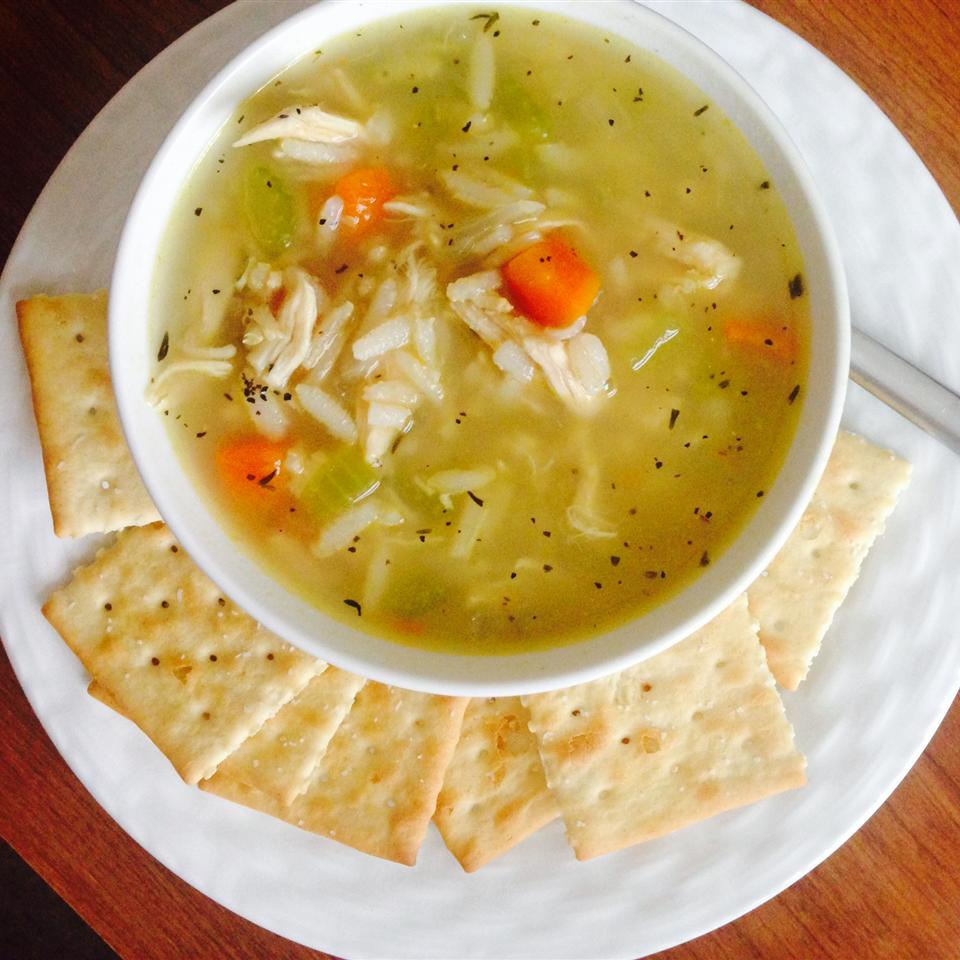

Chicken, rice and vegetable soup

Description
A soup consisting of chicken, vegetables, and rice. A healthy, hearty recipe which is perfect for the cold winter months. The recipe is also a healthy choice, which includes lean meat, rice, and vegetables such as carrots, peas, and kale. The vegetables listed previously are all options to add to the soap. Soaps are great for using up left-overs!
Ingredients
- 5 cups water
- 1 can chicken broth
- 1 skinless, boneless chicken breast halves, cut into cubes
- 3 carrots, chopped
- 1 onion, chopped
- 3 stalks celery, chopped
- 2 cubes chicken bouillon
- 1/3 cup uncooked white rice
- salt and pepper to taste
Steps
- In a large saucepan, set to high heat, combine 4 cups water and the chicken broth and bring to a boil. Add the chicken, carrots, onion, celery, and bouillon then reduce heat to low. Cover and simmer for about 15 minutes or until vegetables are soft.
- Add more water as necessary. Add the rice and allow to simmer for another 15 minutes, or until the rice is tender. Add salt and pepper to taste.